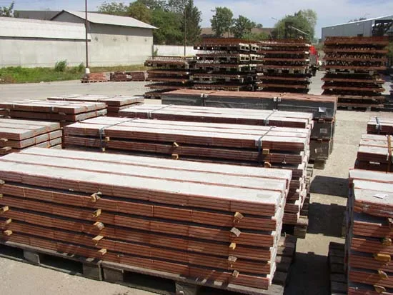

Technické poradenstvo
Individuálne poradenstvo pri spracovaní projektovej dokumentácie podľa potrieb zákazníka.
Katalóg výrobkov TermoBRIK je dostupný na stiahnutie. Stiahnuť katalóg (PDF)
Podpora pre projekt a stavbu
Služby pomáhajú premeniť projekt na konkrétny výber prvkov TermoBRIK. Podmienky nižšie vychádzajú z aktuálneho obsahu pôvodného webu.
Prehľad služieb
Individuálne poradenstvo pri spracovaní projektovej dokumentácie podľa potrieb zákazníka.
Orientačný výpis materiálu TermoBRIK pre hrubú stavbu poskytovaný zdarma.
Výpis prvkov a návrh kladačského plánu zo stropného systému TermoBRIK.
Výpočet spotreby materiálu
Výpočet zahŕňa výpis materiálu TermoBRIK pre hrubú stavbu okrem stropného systému. Kalkulácia má orientačný charakter.
Pôvodný web uvádza maximálnu veľkosť 8 MB pre každý jednotlivý súbor.
Keramický strop
Služba zahŕňa výpis prvkov stropného systému TermoBRIK a vypracovanie kladačského plánu.
Podklady pre strop
Čím presnejšie podklady pošlete, tým menej dopĺňania bude potrebné.
Meno a priezvisko investora, miesto stavby, telefónne číslo a e-mail.
Pôdorysy jednotlivých podlaží, rezy a výkresy krovu v elektronickej podobe PDF, JPG alebo DWG.
Pri návrhu stropu pôvodný web uvádza aj projekt statiky a ďalšie relevantné podklady.
Podklady možno poslať zmluvnému predajcovi, obchodnému zástupcovi alebo technickému poradcovi. Pre všeobecný dopyt použite centrálny e-mail.

Technické poradenstvo
Pôvodný web uvádza technické poradenstvo pri spracovaní projektovej dokumentácie podľa potrieb zákazníka.
Pri otázke uveďte typ stavby, lokalitu, časť systému, ktorú riešite, a dostupnú fázu projektu. Pomôže to nasmerovať dopyt správnemu kontaktu.
Máte pripravený projekt?
Prílohy sa v tejto statickej ukážke neodosielajú. Po prvom kontakte ich pošlete priamo e-mailom na info@pezinske-tehelne.sk.